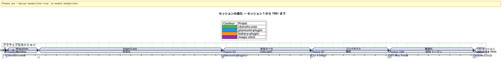
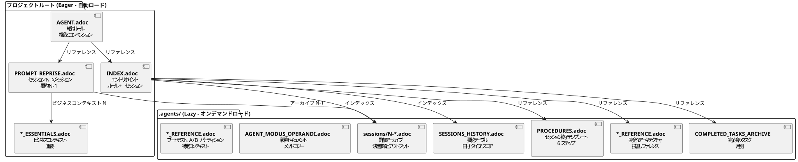

AsciiDocでAIエージェントを制御する：コンテキスト漏れのないOpencodeセッションのための私のEager/Lazy戦略
公開日: 24 April 2026
要約
Opencode のような AI エージェントと複数のセッションにわたる複雑なプロジェクトで作業するとき、根本的な問題に直面します：コンテキストの漏洩. エージェントは前のセッションを覚えていない。彼/彼女に説明されたすべて — アーキテクチャ、慣習、バックログの状態 — が失われている。このコンテキストを毎回再構築するのはコストがかかり、遅く、エラーの原因となる。
この記事では、私がこの問題を解決するために構築した職人的戦略を紹介します：AsciiDocファイルに基づく持続的なガバナンスシステム、二分法を含む熱心な/怠惰なコンテキストトークンの消費を最適化するために、そして一つ必須のセッション終了手続き継続性を確保するために。
シーン：月曜日 4月21日 9時00分
Opencodeを再開して、Gradleプラグインの作業を再開します`plantuml-plugin`. 昨晩、私は三時間を費やして、APIキーのプールアーキテクチャのエージェントと議論しました — ラウンドロビンローテーション、クォータ管理、自動フォールバック。今朝、そのエージェントは私を見て、金魚の目のように見つめました。
_ — こんにちは、私はOpencodeのアシスタントです。今日はどのようにお手伝いできますか？ _
ない — あー、はい、 APIキーのプール, 私たちはYAMLの構造のところまで来ていた。 ない — 注意,PlantumlManager`これは Kotlin のシングルトンオブジェクトであって、クラスではありません。いいえ — いいえ、昨日決めたのは`SyntaxValidationResult`残っていた密封クラスのネストされた内部`PlantumlService.
全部やり直さなければならない。むしろ、すべてを再説明する必要がある。私はセッションの最初の20分を、昨日エージェントがすでに手にしていたコンテキストを再構築することに費やす。トークンを無駄にした20分。コードを書けるはずの20分なのに、必須の教育的説明に時間を費やしている。
Opencodeのバグではありません。これは会話型LLMの本質です：セッション間では、作業メモリは完全に削除された. エージェントは前の任務を覚えておらず、下された決定、特定された罠、私たちが一緒に書いたコードも覚えていません。
私はそれを何十回も経験しました。同時に4つのプロジェクトで、週をまたいで続くセッションが続いています。平均して,セッション時間の30％～40％はエージェントを再文脈化することに専念していた。 プロジェクトのセッション87において`plantuml-plugin`, 我慢できなくなった。これ以上、十回目になる説明をする余裕がなかった`AttemptEntry`トップレベルのデータクラスである`DiagramProcessor.kt`。
システムが必要だった。ハックではない。真のガバナンス。
創世記：カオスからメソッドへ
最初のセッション：暗黒時代
Opencode との私の最初のプロジェクト,plantuml-plugin, 何のガバナンスもなく開始した。質問を投げかけ、エージェントが答え、繰り返し、セッションが終了し、翌日はゼロからやり直す。それはセッション1で、続いてセッション2、セッション3…そしてセッション62まで続き、そこで私は同じアーキテクチャを何度も説明し続けて累計何時間も失ったことに気付いた。
第62回のセッションでは、数字はここにあります：198の単体テストがパスします, 42つの機能テストが検証済み, プラグインは動作します。 しかし、認知的コストは耐え難いです。 新しいセッションごとに、プロジェクトの構造についての20分間の独白から始まります。
site.yml の エピソードが破壊されました (セッション 2, bakery-plugin)
この方法も災害から生まれます。 プロジェクトについて`bakery-gradle`, セッション 2 で、エージェントにファイルを変更するように依頼します。site.yml. エージェントは、ファイルがバージョン管理されているか確認せずに、する`Write`内容を上書きする。結果: 実際のトークン（Firebase APIキー、デプロイシークレット）は偽のプレースホルダーに置き換えられます。ファイルはgitに入っていなかった — それは…にあった`.gitignore`秘密を守るために。
バックアップなし。なし`git restore`可能です。 私は詰まっています。 設定ファイルを手動で再構築し、パスワードマネージャーからトークンを見つけ出し、すべてを元に戻す必要があります。
それはこのフラストレーションから生まれる絶対ルール 1b :
_ 決して潰さない設定ファイルと`Write`完了するとき`Edit`部分的に十分です。決して置き換えてはいけません� 機密の値をダミーの値で。確認する git check-ignore と `git ls-files変更の前に _
この規則は、今では私のすべてのファイルに石に刻まれているように固定されています`AGENT.adoc` et `INDEX.adoc`4つのプロジェクトにおいて、実際のミスから生まれ、私に1時間の手作業のコストをかけた。
Markdown → AsciiDoc の移行（セッション 1、cheroliv.com）
2026年4月25日、cheroliv.com, 私は抜本的な決定を下す：Markdown のガバナンス全体を AsciiDoc に変換する。これは美的ではない。機能的だ。AsciiDoc は LLM がよりよく読める意味構造を提供する：階層的セクション、型付きテーブル、アドモニション (NOTE, WARNING, CAUTION), マシン可読のドキュメント属性
セッション 1 の`cheroliv.com`構造を形式化する：
-
変換の`AGENTS.md` en
AGENT.adoc -
専門エージェントの作成:`CODER.adoc`,
SCRUM_MASTER.adoc,PLANTUML_DESIGNER.adoc -
Eager/Lazy構造の作成：
INDEX.adoc,SESSIONS_HISTORY.adoc,AGENT_SESSION_MANAGER.adoc,SESSION_CHECKLIST.adoc,PROCEDURES.adoc
1つのコミット：90975e9 refactor: migrate agent governance from Markdown to AsciiDoc. そしてサイトは引き続き機能しています。

上記のタイムラインは実際の進行を示しています。転換点はセッション87です。ここで繰り返しの再コンテキスト化のフラストレーションが許容閾値を超え、Eager/Lazyメソッドは単なるアイデアではなく義務となります。
戦略：深掘りEager/Lazy
哲学 : 認知への応用コンピューティングキャッシュ
私のアプローチは、コンピュータのキャッシュ管理から直接インスピレーションを得ています。すべてが批判的で頻繁に使用されるすぐにアクセス可能でなければならない熱心なあるものはすべてコンテキスト依存のまたは大容量の� 必要に応じてロードされなければならない (怠惰な).
Eager (ダッシュボード) |
Lazy (オーナーマニュアル) |
サイズ |
< 100 行, < 10k トークン |
無制限、詳細 |
読み込み |
自動、セッション開始時 |
エージェントの要請により |
内容 |
絶対的なルール、通常の任務、危機的な状態 |
セッションアーカイブ、完全な履歴、詳細な手順、技術資料 |
役割 |
エージェントをすぐに方向づける |
深いコンテキストの質問に答える |
Eager ファイル : ダッシュボード
これらのファイルは各プロジェクトのルートに存在し、エージェントによって各セッションの開始時に自動的に読み込まれます。それらはダッシュボード-- 重要な情報、すぐにアクセス可能。

AGENT.adoc-- マスターファイル。について`cheroliv.com`, 200行あり、以下を含みます :
-
プロジェクトの絶対的なルール（コミットは許可がなければ、`rm`確認なし)
-
プロジェクトの構造とコーディング規約
-
基本的なコマンド (
./gradlew serve,./gradlew test) -
エピックとプロダクトバックログ(優先順位付けられたユーザーストーリー)
-
横断的な品質基準（アクセシビリティ、レスポンシブ、互換性）
上`bakery-plugin`, ルール0は異なります :./gradlew -q publishToMavenLocal` ソースコードを変更するたびに必須です. ローカル JAR を再公開せずにプラグインをテストしたため、まだパッケージ化されていないコードをデバッグするのに1時間も無駄にしてしまった。
PROMPT_REPRISE.adoc-- 現在のセッションのミッション。各セッションの終了時に更新され、以下を含みます：
-
セッション番号と優先ミッション
-
前回のセッションのまとめ（行われたこと、まだやるべきこと）
-
現在のセッションの受入基準
-
特定の技術的なリマインダー
.agents/INDEX.adoc-- エントリーポイント。これは絶対的なルール、最近のセッション、そして特にプロジェクトポートフォリオ同じ方法論で管理されています。今日現在、ここに5つのプロジェクトが掲載されています :
----
----
----
| magic-stick | Session 23 | SCRIPT_VERIFICATION.adoc | 2026-04-27 |
| bakery-gradle | Session 11 | TEST_COVERAGE_ANALYSIS | 2026-04-27 |
| cheroliv.com | Session 9 | TEST_COVERAGE_ANALYSIS | 2026-04-27 |
| plantuml-gradle| Session 133| TEST_COVERAGE_ANALYSIS | 2026-04-23 |
| jhipster-gradle-plugins | Session 1 | TEST_COVERAGE_ANALYSIS | 2026-04-28 |
----
(No content)`*_ESSENTIALS.adoc`-- Session 109（plantuml-plugin）による最近の追加で、Eagerコンテキストをさらに最適化。API キー プール上のビジネス コンテキスト 200 行をロードする代わりに、必須の 50 行だけをロードし、残りの 150 行は LAZY の状態のままにしておきます`*_REFERENCE.adoc`.
�測定結果 : ～への移行**~25k トークン EAGER から ~10k トークン**(60%の利益)。エージェントはもはやエネルギーを消費するリマインダーを必要としない。
==== 欠落しているリンク : `opencode.json
実は告白しておかなければならないことがあります。ドキュメントに残すのをうっかり忘れそうになったことです。これらの .adoc ファイルの上には、動作に不可欠な極めて小さな JSON ファイルがあります。それは`opencode.json`そして六行です。文字通り六行です。
[source,json]
----
{
"$schema": "https://opencode.ai/config.json",
"instructions": [
"AGENT.adoc"
]
}
----
このファイルがOpencodeに伝える：「起動時に、ロード」`AGENT.adoc`「自動的に。」 彼がいないと、エージェントは私が記事の冒頭で説明した通り、真っ白なページです。彼がいると、エージェントはすでに絶対的なルール、プロジェクトのアーキテクチャ、そして必須のコマンドを手にしています — 私が「こんにちは」と言う前でも。
私は偶然、このファイルの重要性に気づきました。 上で`bakery-plugin`, それは存在していなかった。私はなぜそのエージェントが他のプロジェクトよりもこのプロジェクトで系統的にもっと「迷子」だったのか疑問に思っていた。絶対的なルールは確かにその中にあった`AGENT.adoc`— しかし`AGENT.adoc`一度も充電されていなかった。 エージェントは私が読むように言ったものだけを、各セッションごとに手動で読んでいた。 これはセッション11の`bakery-plugin`私がその欠如に気づいたとき`opencode.json`. 私はそれを作成しました — そしてセッション12は他のセッションと同様に開始されました。
このファイルは今では私にとってとても明白で、もうそれについて考えることすらしなくなった。ツールに詳しすぎる開発者が陥りがちな典型的なミスだ。今日では、私はこれを常に*avant*作成するようにしている。`AGENT.adoc`. これが最初の石です。
==== INDEX.adoc`の二重性
もう一つ、明確にすべき微妙な点があります：`INDEX.adoc`に住んでいる`.agents/`— LAZYとして提示したフォルダ。しかし、私はこれをすべてのテーブルでEAGERとしてリストしている。ここには明らかな緊張がある。
実際の現場 : ファイル`.agents/INDEX.adoc`自動的に正しく読み込まれ、同様に`AGENT.adoc` et `PROMPT_REPRISE.adoc`. 彼らは中に`.agents/`組織上の理由により — 根を侵さないように — しかし、彼らの動作はEAGERである。
上に`plantuml-plugin`, `INDEX.adoc`これは200行で、過去のセッションの教訓である歴史とともに、絶対に*完全な*ルール、スコア付きのEPIC、そしてプロジェクトのポートフォリオを含んでいます。これはエージェントが「現在の状況」を確認するために参照するドキュメントです。Sur`bakery-plugin`, 最近のロードマップとセッションで150行です。
意図的な冗長性の間`AGENT.adoc` et `INDEX.adoc`� 驚くかもしれません。 絶対的なルールは両方に存在します。 なぜ？ なぜなら、それらは二つの異なる役割を果たしているから：の中で`AGENT.adoc`, それらは*説明的*です (ルールのストーリーテリング、学んだ教訓) ; 中で`INDEX.adoc`, それらは *実行可能* (裸のルール、正当化なし、迅速な参照のため)。 エージェントは読む`AGENT.adoc`一度理解するために；彼は読み返す`INDEX.adoc`各セッションで*適用*する。2つの用途、2つのフォーマット。
[plantuml, format=svg, id=diag-dualite-agent-index, alt="Comparaison entre AGENT.adoc (narratif) et INDEX.adoc (exécutif)"]
----
@startuml
skinparam backgroundColor #FEFEFE
skinparam defaultTextAlignment center
title 二重性 AGENT.adoc ←→ INDEX.adoc
left to right direction
rectangle "AGENT.adoc\n(根 — EAGER)" as AGENT #E3F2FD {
rectangle "**ナラティブフォーマット**\nルールのストーリーテリング\n学んだ教訓、コンテキスト" as NARR
rectangle "🏗️**完全なアーキテクチャ**\nプロジェクト構造、コンポーネント\n詳細なユーザーストーリーバックログ" as ARCHI
rectangle "📋 **解説ルール**\nなぜルールは存在するのか\nインシデントの履歴" as EXPL
}
rectangle "INDEX.adoc\n(.agents/ — EAGER)" as INDEX #E8F5E9 {
rectangle "⚡ **エグゼクティブフォーマット**\n裸のルール、正当化なし\n迅速な相談" as EXEC
rectangle "📊 **Roadmap & EPICs**\nサマリーテーブル\n進行状況, スコア, 優先度" as ROAD
rectangle "🌐 **プロジェクトポートフォリオ**\n横断ビュー\n5つの同期プロジェクト" as PORT
}
AGENT --> INDEX : "Agent が AGENT.adoc を\n1 回 読んで **理解する**"
INDEX --> AGENT : "AgentはINDEX.adocを読み直しました\n各セッションで**適用**する"
note bottom of AGENT
Taille max : 200 lignes
end note
note bottom of INDEX
Taille max : 200 lignes
Source de vérité en cas de divergence
end note
@enduml
----
この意図的な冗長性は設計上の選択です。これらはEAGERトークンの追加で約50行消費しますが、エージェントが常にルールを目の前に持てるように保証します。つまり、即時の従順を助ける簡潔なフォーマットでも同様です。
=== LAZY ファイル: 所有者のためのマニュアル
これらのファイルは[場所]に存在します`.agents/`それらは、エージェントが必要とする時だけ読まれる。それらは、方法の真の財産を構成する。なぜなら、それらは現在のコンテキストを汚すことなくプロジェクトの知識を蓄積するからである。
[plantuml, format=svg, id=diag-agents-tree, alt="Arborescence complète du dossier .agents/"]
----
@startuml
skinparam folderBackgroundColor #E3F2FD
skinparam folderBorderColor #1565C0
skinparam fileBackgroundColor #FFF3E0
skinparam fileBorderColor #EF6C00
folder ".agents/" as ROOT {
file "INDEX.adoc\n(EAGER -- 200 行)" as IDX #E8F5E9
file "AGENT_SESSION_MANAGER.adoc\n(テンプレート セッション)" as ASM
file "SESSION_CHECKLIST.adoc\n(いつ変更するか)" as CHK
file "PROCEDURES.adoc\n(6段階 + LAZY/EAGER)" as PRO
file "SESSIONS_HISTORY.adoc\n(すべてのセッション)" as HIS
folder "セッション/" as SESS {
file "1-chore-migration.adoc" as S1
file "109-形式化-lazy.adoc" as S109 #FFECB3
file "133-epic11-article.adoc" as S133
file "... +130 他の" as SMORE
}
folder "アーカイブ/" as ARCH {
file "COMPLETED_TASKS_2026-04.adoc" as CTA
file "SESSIONS_HISTORY_83-95.adoc" as SHIST
folder "セッションのサマリー/" as SUM {
file "SESSION_64_SUMMARY.adoc" as SU64
file "SESSION_73_SUMMARY.adoc" as SU73
file "..." as SUMORE
}
folder "プロンプトアーカイブ/" as PARCH {
file "PROMPT_REPRISE_S65.adoc" as PR65
file "PROMPT_REPRISE_S75.adoc" as PR75
file "..." as PMORE
}
}
}
IDX --> SESS : "索引"
IDX --> HIS : "索引"
IDX --> ARCH : "参照"
note right of S109
Session 109 =
Formalisation stratégie
LAZY/EAGER
Token : ~25k → ~10k
end note
@enduml
----
上記のツリー構造はフォルダーの実際の構造を示しています。`.agents/`上に`plantuml-plugin`, 最も成熟したプロジェクト。 注目してください 3層の深さ : ルートファイル（メタデータ）, ディレクトリ`sessions/`（年代順アーカイブ）, と ファイル`archives/`(集約と要約)。この深さが、単なるTODOファイルのガバナンスを変える**完全な組織記憶**。
**.agents/sessions/{N}-{titre}.adoc**-- 各セッションの詳細なアーカイブ。現在：
* `plantuml-plugin`:**133件のアーカイブ済みセッション**(セッション1から133まで)
* `bakery-plugin` : **11 セッション**
* `magic-stick` : **23セッション**
* `cheroliv.com` : **9 正式なセッション**+ 7セッション（プリシステム）が遡及的に再構築されました
各アーカイブはセッションの完全なコンテキスト、行われた決定、遭遇した問題とその解決、実行されたコマンドとその出力を含みます。
**.agents/SESSIONS_HISTORY.adoc**-- すべてのセッションのスコア付きサマリーテーブル。例:`cheroliv.com`:
----
| -6 | 2025-05 | chore | Initialisation projet Gradle/JBake | 7/10 | 1 | 2026-04-25 | chore | Migration gouvernance agent | 8/10 | 7 | 2026-04-27 | debug/fix | Correction publishSite | 9/10 | 8 | 2026-04-27 | analyse | Analyse article 0108 | 7/10
**.agents/COMPLETED_TASKS_ARCHIVE_{mois}.adoc**-- 完了したタスクを月ごとにアーカイブし、アクティブなバックログを過負荷にしないようにします。ユーザーストーリーが完了すると、ここに移行します。バックログは読みやすく保たれます：アクティブなアイテムは最大10個。
**.agents/PROCEDURES.adoc**-- 終了セッション手順の詳細なテンプレート。長いが、エージェントが方法を学ぶときに一度だけ読まれる。その後、手順は機械的になる。
**.agents/AGENT_MODUS_OPERANDI.adoc**完全な戦略ドキュメント。 上で`plantuml-plugin`, このファイルは**900+行**そして実際にはその名前が付いています`AGENT_METHODOLOGIES.adoc`— この記事を書いている間と実際に実装される間で、私は名前を変更しました。この種の命名のズレは、進化する職人製のシステムでは避けられない。重要なのは命名規則です：ファイルが*メソッド*を文書化している場合、それはで始まります。`AGENT_`または明示的なプレフィックス。Eager/Lazyの手法を文書化し、従うべきパターンと避けるべきアンチパターンを示しています。LAZYであるのは、エージェントが各セッションごとに戦略全体を読み直す必要がなく、あいまいさがあるときだけだからです。
(Empty)`*_REFERENCE.adoc`** -- プロジェクト固有の技術的参照。について`magic-stick`, 密集した2つのLAZYファイル:
* `AB_PARTITION_REFERENCE.adoc`(147 行) -- A/B パーティション GPT アーキテクチャ, スクリプト`update-system.sh`, 推定サイズ, ロールバックメカニズム
* `BOOT_TEST_REFERENCE.adoc`(144 行) -- QEMU + VNC を使用して物理ハードウェアなしで ISO のブートをテストする手順、BIOS/UEFI チェックリスト、CI/CD の制限事項
上`plantuml-plugin` :
* `ARCHITECTURE.adoc`(134 行) -- 11 のデータクラスの構造, 注意点（避けるべき罠）, 最適化されたテストコマンド
* `API_KEY_POOL_REFERENCE.adoc`-- キー プールの完全な詳細 (LAZY pendant que`ESSENTIALS`です EAGER)
== �専門エージェント：仮想チーム
ガバナンスは受動的なファイルに限定されません。私は形式化した**�専門エージェントの役割**専用のLAZYファイル内に、タスクの種類に応じた期待されるワークフローが定義されています。
|===
|エージェント |ファイル |役割 |プロジェクト |**コードを書く** |`CODER.adoc` |FTL/CSS/JS の実装、セマンティックタグ、アクセシビリティ基準 |cheroliv.com |**スクラムマスター** |`SCRUM_MASTER.adoc` |ユーザーストーリーの計画、サブタスクへの分割、依存関係の検出 |cheroliv.com |**PlantUML デザイナー** |`PLANTUML_DESIGNER.adoc` |�図の作成, PUML構文, JBake統合 |cheroliv.com
|===
ファイル`CODER.adoc`上`cheroliv.com`具体的なルールが含まれています：_一つだけ`<h1>`python print("ページごとに、パスにプレフィックスをつける")`${content.rootpath}`_, _Déclarer la langue `<html lang="${content.lang!"fr"}">`_. これらの規則は一度書かれると、セッション1からエージェントによって自動的に遵守されます。
ファイル`SCRUM_MASTER.adoc`納品物の構造を課す：**目的**, **タスク**(代入付き座標),**受入基準**, **リスク**. 私がアクションプランを要求すると、エージェントは私が求めずにこの構造を生成します。ガバナンス**プログラム**エージェント。
==== 専門エージェントが不可欠になる時
専門エージェントの作成は自然な曲線に従います。プロジェクトの初めには、これらは必要ありません —`AGENT.adoc`十分です。しかしプロジェクトが大きくなる（たとえば、20セッションを超える場合）と、2つのシグナルがあなたに警告を発すべきです。
1. エージェントは2つの異なる分野の規則を混在させます（例：PlantUML構文とCSSルール）
2. あなたは、エージェントにすでに5回説明した慣習について訂正することに、もっと時間を費やしています。
上に`cheroliv.com`, これはセッションで起こったことです... 1. はい、最初からです。なぜなら、このプロジェクトはFTL、CSS、JSの3つの言語を使ったウェブサイトであり、AsciiDocのコンテンツとPlantUMLのダイアグラムを含んでいるからです — これらは全く関係のない3つの分野です。CODERエージェントはフォントサイズとメディアクエリを知る必要があり、PLANTUML_DESIGNERエージェントは構文を知る必要があります`@startuml`. 分離なく、エージェント CODER が私にダイアグラムを提案し、その逆も同様だった。混乱。
上`jhipster-gradle-plugins`, 私はGradleプラグイン開発に適した2つの専門エージェントを作成しました：`PLUGIN_DEVELOPER.adoc` et `BACKLOG_MANAGER.adoc`. 最初はすべての Kotlin/Gradle の規約をエンコードします（ただし`!!`, データクラス（モデル用）,`@TaskAction`タスクのため)。2番目は知っている`persistence`それになる前に安定している必要がある`assistant`開発を開始しない — mono-repo内のクリティカルな依存関係。
犯してはいけない間違い：早すぎる段階でエージェントを作りすぎること`plantuml-plugin`セッション108を待ち、APIキーのプール用の専門エージェントを正式化しました。それ以前は、業務コンテキストは`AGENT.adoc`. 経験則：専門的なエージェントは、その業務ドメインのドキュメントが100行を超えるとき正当化される。
==== セッション命名規約
小さくて取るに足らない詳細だが、100回のセッションに到達すると重要になる。アーカイブファイルはどのように命名すればよいでしょうか？
私は苦い経験から、規約が必要だと学びました — 初めは4つのプロジェクト、4つの異なるフォーマットがあり、訳がわからなくなりました。今日、私が確立した規約は：
----
{N}-{type}-{sujet-kebab-case}.adoc
具体例:
* `1-chore-migration-gouvernance-agent.adoc`— セッション 1、タイプの雑用
* `10-solidification-tests.adoc`— セッション10、明示的な型なし (主題だけで十分)
* `036-debug-graphify-symlink-epic9.adoc`— 3桁の番号付きソート用セッション36
セッション番号が主要なソート基準です。3桁の番号（001、036、133）を使用するプロジェクトは、99を超えたときの辞書順ソートの問題を回避します。これが今私が使っているものです`magic-stick`:
`001-init-projet.adoc`, `036-debug-graphify-symlink-epic9.adoc`。
タイプはオプションであり、セッションのキーワード (debug, feature, refactor, docs, chore, test) から派生します。kebab-case のサブジェクトは最も重要な部分です：ファイルを開かずにセッションを見つけられるようにする必要があります。「テストの統合のタイムアウトを修正したセッションはどれだったかな？」と疑問に思う場合、答えは`124-fix-timeout-integration-test.adoc`.
再構築された歴史的セッション（ガバナンス以前に生まれたプロジェクト）については、負の数を使用しています。の`cheroliv.com`, セッション -6 から 0 までがプロジェクトのガバナンス以前の歴史全体をカバーしています。そして、ドキュメント化されていないセッションや失われたセッションについては、その中にエントリを作成します`SESSIONS_HISTORY.adoc`対応するアーカイブなし、スコアあり`?`. それは仮を装うよりも正直だ。
[plantuml, format=svg, id=diag-naming-convention, alt="Arbre de décision pour le nommage des fichiers de session"]
----
@startuml
skinparam backgroundColor #FEFEFE
skinparam defaultTextAlignment center
skinparam wrapWidth 200
title セッション命名規約
start
:Une session se termine;
note right: Trigger "セッションの終わり"
if (Session antérieure\nà la gouvernance ?) then (oui)
:Numéro **NÉGATIF**\n-6, -5 ... 0;
note right: Historique\nreconstitué
:Suffixe : reconstitution;
else (non)
:Numéro **POSITIF**\nsur 3 chiffres si > 99;
note right: 001, 036, 133\npour le tri lexicographique
:Détecter le **TYPE**;
if (Mots-clés trouvés ?) then (oui)
:debug / feature / refactor\ndocs / chore / test;
else (non)
:Omettre le type\n(le sujet suffit);
endif
:Formuler le **SUJET** en kebab-case;
note right
Ex: fix-timeout-integration-test
Doit permettre de retrouver
sans ouvrir le fichier
end note
endif
:Nom final : {N}-{type}-{sujet}.adoc;
note right
• 1-chore-migration-gouvernance.adoc
• 036-debug-graphify-symlink.adoc
• 124-fix-timeout-integration-test.adoc
• 133-epic11-article-blog-kg.adoc
end note
if (Session documentée ?) then (oui)
:Créer archive dans sessions/;
:Ajouter ligne SESSIONS_HISTORY\navec score X/10;
else (non)
:Ajouter ligne SESSIONS_HISTORY\navec score **?**\n**sans archive**;
note right: L'honnêteté\nplutôt que le vide
endif
stop
@enduml
----
==== TEST_COVERAGE_ANALYSIS.adoc` — ステップ5 詳細分析
手順5のセッション終了の手順は最も謎めいています。それは「更新する」と言います。`TEST_COVERAGE_ANALYSIS.adoc`もしテストが追加または変更された場合。 しかし、このファイルはどのように見えるでしょうか？
上`plantuml-plugin`, それは数行から完全な構造に進化しました。ここにその安定した形があります：
[source]
----
= Analyse de Couverture de Tests
== Suivi des Tests
|===
| Classe de test | Type | Tests | Statut | Dernière MAJ
| PlantumlServiceTest | unit | 45/45 | ✅ PASS | 2026-04-23
| ApiKeyPoolTest | integration | 15/15 | ✅ PASS | 2026-04-20
|===
== Historique par Session
| Session | Tests ajoutés | Tests modifiés | Couverture
| 133 | 0 | 2 | 100%
| 132 | 5 | 0 | 100%
|===
----
興味はファイルそのものではなく、*変更点を記録する*義務である。このステップを踏まなければ、50セッション後にはどのテストが何をカバーしているのかわからなくなる。エージェントも同様だ。ファイルはプロジェクトのテストカバレッジの唯一の真実の参照となる。
[plantuml, format=svg, id=diag-dualite-agent-index, alt="Comparaison entre AGENT.adoc (narratif) et INDEX.adoc (exécutif)"]
----
@startuml
skinparam backgroundColor #FEFEFE
skinparam defaultTextAlignment center
title `AGENT.adoc` ←→ `INDEX.adoc` の二元性
left to right direction
rectangle "AGENT.adoc`\n(ルート — EAGER)" as AGENT #E3F2FD {
rectangle "📖 **ナラティブ形式**\nルールのストーリーテリング\n得られた教訓、コンテキスト" as NARR
rectangle "🏗️ **完全なアーキテクチャ**\nプロジェクト構造、コンポーネント\n詳細なUSバックログ" as ARCHI
rectangle "📋 **解説ルール**\nルールが存在する理由\nインシデントの履歴" as EXPL
}
rectangle "`INDEX.adoc`\n(.agents/ — EAGER)" as INDEX #E8F5E9 {
rectangle "⚡ **エグゼクティブ形式**\n正当化なしの純粋なルール\nクイックリファレンス" as EXEC
rectangle "📊 **ロードマップ & EPICs**\n要約テーブル\n進捗、スコア、優先度" as ROAD
rectangle "🌐 **プロジェクトポートフォリオ**\n横断的なビュー\n同期された5つのプロジェクト" as PORT
}
AGENT --> INDEX : "エージェントは `AGENT.adoc` を読み\n**理解**するために1回実行"
INDEX --> AGENT : "エージェントは `INDEX.adoc` を再読し\n**適用**するためにセッションごとに実行"
note bottom of AGENT
最大サイズ：200行
end note
note bottom of INDEX
最大サイズ：200行
Source de vérité en cas de divergence
end note
@enduml
----
あなたのプロジェクトに *まったくない* テスト — ユニットテストでも、機能テストでも、スクリプトテストでも — それでも空のファイルを作成し、「やること：テスト戦略を定義する」というセクションを追加してください。これは、将来の自分にこのトピックが未処理であることを思い出させるしおりとなります。
[plantuml, format=svg, id=diag-session-flow, alt="Flux d'une session type avec Eager/Lazy et agents"]
----
@startuml
skinparam backgroundColor #FEFEFE
start
:Début session;
note right: L'agent est une page blanche
:Chargement EAGER auto;
note right
* AGENT.adoc (règles absolues)
* PROMPT_REPRISE.adoc (mission N)
* INDEX.adoc (état projet)
end note
if (Mission claire ?) then (oui)
:Exécution directe;
else (non)
:Charge LAZY sur demande;
note right
* SESSIONS_HISTORY.adoc (contexte passé)
* sessions/{N-1}-*.adoc (décisions)
* *_REFERENCE.adoc (architechture)
end note
endif
:Délégation agent spécialisé ?;
if (CODER ?) then (oui)
:Lit CODER.adoc;
:Suit conventions FTL/CSS;
elseif (SCRUM Master ?) then (oui)
:Lit SCRUM_MASTER.adoc;
:Structure livrable imposée;
elseif (PlantUML ?) then (oui)
:Lit PLANTUML_DESIGNER.adoc;
:Syntaxe PUML + intégration;
else (non)
endif
:Travail de la session;
:Fin de session (trigger utilisateur);
:Procédure 6 étapes;
note right
1. Archive sessions/N-*.adoc
2. Maj PROMPT_REPRISE.adoc (N+1)
3. Maj SESSIONS_HISTORY.adoc
4. Maj INDEX.adoc
5. Maj TEST_COVERAGE (si applicable)
6. Maj COMPLETED_TASKS_ARCHIVE.adoc
end note
:Checklist [✅] x 6;
stop
@enduml
----
上記の図は、セッションの完全なライフサイクルを示しています。重要なポイントは、EAGERロード後の分岐です：ミッションが十分に明確で直接実行できる場合（80％のケース）と、エージェントがLAZYロードを行い曖昧さを解決する場合（20％のケース）があります。この判別がトークンの節約につながります。
[plantuml, format=svg, id=diag-agents-tree, alt="Arborescence complète du dossier .agents/"]
----
@startuml
skinparam folderBackgroundColor #E3F2FD
skinparam folderBorderColor #1565C0
skinparam fileBackgroundColor #FFF3E0
skinparam fileBorderColor #EF6C00
folder ".agents/" as ROOT {
file "INDEX.adoc\n(EAGER -- 200行)" as IDX #E8F5E9
file "AGENT_SESSION_MANAGER.adoc\n(セッションテンプレート)" as ASM
file "SESSION_CHECKLIST.adoc\n(変更タイミング)" as CHK
file "PROCEDURES.adoc\n(6ステップ + LAZY/EAGER)" as PRO
file "SESSIONS_HISTORY.adoc\n(全セッション)" as HIS
folder "sessions/" as SESS {
file "1-chore-migration.adoc" as S1
file "109-formalisation-lazy.adoc" as S109 #FFECB3
file "133-epic11-article.adoc" as S133
file "... +他130件" as SMORE
}
folder "archives/" as ARCH {
file "COMPLETED_TASKS_2026-04.adoc" as CTA
file "SESSIONS_HISTORY_83-95.adoc" as SHIST
folder "sessions_summaries/" as SUM {
file "SESSION_64_SUMMARY.adoc" as SU64
file "SESSION_73_SUMMARY.adoc" as SU73
file "..." as SUMORE
}
folder "prompts_archive/" as PARCH {
file "PROMPT_REPRISE_S65.adoc" as PR65
file "PROMPT_REPRISE_S75.adoc" as PR75
file "..." as PMORE
}
}
}
IDX --> SESS : "索引"
IDX --> HIS : "索引"
IDX --> ARCH : "リファレンス"
note right of S109
セッション 109 =
戦略の定式化
LAZY/EAGER
トークン：~25k → ~10k
end note
@enduml
----
=== なぜ彼女は不可欠なのか
この手順がないと、Eager/Lazy ストラテジーは何の役にも立ちません。それが、セッションの作業を永続的な情報に変換します。それが実行されます。**ユーザーの明示的な要求により**(キーワード: "セッション終了", "私が去る", など), そしてそれは**必須**-- 例外もなく、漏れもなく。
ファイル`SESSION_CHECKLIST.adoc`理想的なセッションメトリクスを定義する：
* 所要時間: 15-30分
* 変更されたファイル: 1-3個まで
* LLMの交換：5-10メッセージ
* コンテキストトークン : < 50k
セッションを変更する必要がある兆候 : _LLMが既に修正されたエラーを繰り返す_、 _同時に3ファイル以上が変更されている_、 _会話が50メッセージを超える_。 黄金律 :**2時間のセッションと混乱したデバッグより、20分のセッションを5回行う方が良い。**
=== 6つのステップのフロー (静かに)
[plantuml, format=svg, id=diag-end-session-flow, alt="Flux de la procédure de fin de session"]
----
@startuml
skinparam defaultTextAlignment center
skinparam wrapWidth 200
skinparam activityBackgroundColor #E3F2FD
start
:L'utilisateur dit "セッションの終了";
note right: Mots-clés déclencheurs
:Agent détecte le trigger;
:Étape 1\nCréer archive\n`.agents/sessions/N-*.adoc`;
note right: Tout le contexte de la session
:Étape 2\nMettre à jour\n`PROMPT_REPRISE.adoc`;
note right: Mission N + critères d'acceptation N+1
:Étape 3\nMettre à jour\n`SESSIONS_HISTORY.adoc`;
note right: Ligne récap : # / Date / Type / Sujet / Score
:Étape 4\nMettre à jour\n`INDEX.adoc`;
note right: État courant, roadmap, fichiers modifiés
:Étape 5\nMettre à jour\n`TEST_COVERAGE_ANALYSIS.adoc`;
note right: Si tests ajoutés ou modifiés
:Étape 6\nMettre à jour\n`COMPLETED_TASKS_ARCHIVE.adoc`;
note right: Archiver tâches terminées
:Afficher la checklist de confirmation;
note right: Vérifier que chaque [✅] est mérité
stop
@enduml
----
=== 150+セッションの結果
これは、私の4つのプロジェクトに体系的に適用したこの手順の結果です：
**プラントUMLプラグイン** :
* **133セッション**プロジェクトの開始以来
* **240/240 テスト合格**(100% カバレッジ) -- EPICs 1-7 完了
* **57 シナリオ Cucumber BDD**�検証済み
* 設定ファイルに関する実際のエラーから生じた安全規則 (Session 2 bakery-plugin)
**ベーカリープラグイン**:
* **11セッション**2週間で
* Supabase → Firebase の移行が完了（9つのテストが修正されました）
* EPIC 6 (publishProfile) 本番環境で機能する
* ルール 0 が作成されました :`publishToMavenLocal`各修正後の必須
**マジック・スティック**:
* **23セッション**A/Bパーティションを持つXubuntuライブシステムを構築するために
* セッション10で最初に生成されたISO
* QEMU + VNC の形式化されたブートテスト (LAZY ドキュメント 144 行)
* 機能的なSourceForgeのCI/CD
**cheroliv.com** :
* **9回の正式なセッション**+ 7回のプレシステムセッションの再構成
* 記事0101 (OpenCode PATH) 公開済み
* Article 0108（こちら）は、その欠点の分析後に書き直された
* 完全なガバナンスがMarkdownからAsciiDocに移行されました
=== 最終チェックリスト
6ステップのサイレント実行後に、エージェントは確認チェックリストを表示しなければなりません：
✅ Procédure de fin de session exécutée 📋 Checklist :
**絶対的なルール**どのステップもマークすることはできません`[✅]`ファイルが実際に変更され、検証されていない場合。
== Bootstrapガイド：1日目、セッション0
あなたはその方法に確信を持っています。新しいプロジェクトに適用したいです。どこから始めればよいでしょうか？
私は2026年4月28日にこの瞬間を経験しました。私はOpencodeを開いて`jhipster-gradle-plugins`, 私の JHipster Gradle プラグイン 2 つを含むモノレポです。これはすでに存在するプロジェクトで — コードはそこにあり、Gradle タスクは正常に動作しています。しかし、エージェントのガバナンスは？ゼロ。真っ白なページ。このように`plantuml-plugin`そのセッション1は、何ヶ月も前のことだった。
以下が私が従った正確な手順であり、今後の新しいプロジェクトでも同じように従います。順序に注意してください — 重要です。
[plantuml, format=svg, id=diag-bootstrap, alt="Flux de bootstrap en 6 étapes pour initialiser la gouvernance agent sur un nouveau projet"]
----
@startuml
skinparam backgroundColor #FEFEFE
skinparam defaultTextAlignment center
skinparam wrapWidth 250
skinparam activityBackgroundColor #E8F5E9
title ブートストラップ ガバナンス — 1日目, セッション0
start
:Étape 0\nCréer **opencode.json**\n(6 lignes, instructions: AGENT.adoc);
note right: Le pont qui charge\nAGENT.adoc automatiquement
:Étape 1\nCréer les dossiers\n**mkdir -p .agents/sessions/ .agents/archives/**;
note right: Les conteneurs vides\navant que l'agent écrive dedans
:Étape 2\nCréer **AGENT.adoc**\n(200 lignes, règles absolues);
note right: Le fichier maître\nStructure minimale v1
:Étape 3\nCréer **PROMPT_REPRISE.adoc**\nMission session 1 (max 70 lignes);
note right: Ce que l'agent doit\nfaire à la prochaine session
:Étape 4\nCréer **.agents/INDEX.adoc**\nRègles exécutives + roadmap;
note right: Point d'entrée EAGER\ndans le dossier LAZY
:Étape 5\nCréer les fichiers LAZY structurants\n6 fichiers : SESSIONS_HISTORY, CHECKLIST, etc.;
note right
• SESSIONS_HISTORY.adoc
• SESSION_CHECKLIST.adoc
• PROCEDURES.adoc
• AGENT_SESSION_MANAGER.adoc
• TEST_COVERAGE_ANALYSIS.adoc
• Agents spécialisés (si besoin)
end note
:Étape 6\nAjouter le projet au Portefeuille\nMettre à jour TOUS les INDEX.adoc existants;
note right: Maintenance transverse\nObligatoire mais fastidieuse
:✅ Bootstrap terminé\nSession 1 prête;
note right: 20 minutes investies\nDes centaines économisées
stop
@enduml
----
=== ステップ 0: `opencode.json` を作成
これは最初のファイルです。いいえ`AGENT.adoc`, ない`INDEX.adoc`。`opencode.json`まず、単純な理由で： あなたが作成するとき`AGENT.adoc`まず、自動的にロードするブリッジを作成するのを忘れるでしょう。私はそれを…で作りました。`bakery-plugin`, 私は何を話しているか知っています。
=== ステップ 1：フォルダーを作成する
[source,bash]
----
mkdir -p .agents/sessions .agents/archives
----
空のフォルダーが2つです。`sessions/`各セッションのアーカイブを受け取ります。`archives/`月次のCOMPLETED_TASKS_ARCHIVEを受け取ります。これらのフォルダは、エージェントが書き込む必要がある*前*に存在していなければなりません。フォルダとファイルを同時に作成しなければならないエージェントは、静かに失敗する可能性のあるエージェントです。
=== ステップ 2: `AGENT.adoc` を作成 — マスターファイル
最初のバージョン用の最小構造（成長します）：
[plantuml, format=svg, id=diag-naming-convention, alt="Arbre de décision pour le nommage des fichiers de session"]
----
@startuml
skinparam backgroundColor #FEFEFE
skinparam defaultTextAlignment center
skinparam wrapWidth 200
title セッション命名規則
start
:Une session se termine;
note right: Trigger "セッションの終了"
if (Session antérieure\nà la gouvernance ?) then (oui)
:Numéro **NÉGATIF**\n-6, -5 ... 0;
note right: 再構成された履歴
:Suffixe : reconstitution;
else (non)
:Numéro **POSITIF**\nsur 3 chiffres si > 99;
note right: 001, 036, 133\n辞書式ソート用
:Détecter le **TYPE**;
if (Mots-clés trouvés ?) then (oui)
:debug / feature / refactor\ndocs / chore / test;
else (non)
:Omettre le type\n(le sujet suffit);
endif
:Formuler le **SUJET** en kebab-case;
note right
fix-timeout-integration-test`
ファイルを開かずに
見つけることができる必要があります
end note
endif
:Nom final : {N}-{type}-{sujet}.adoc;
note right
• 1-chore-migration-gouvernance.adoc
• 036-debug-graphify-symlink.adoc
• 124-fix-timeout-integration-test.adoc
• 133-epic11-article-blog-kg.adoc
end note
if (Session documentée ?) then (oui)
:Créer archive dans sessions/;
:Ajouter ligne SESSIONS_HISTORY\navec score X/10;
else (non)
:Ajouter ligne SESSIONS_HISTORY\navec score **?**\n**sans archive**;
note right: 空虚よりも\n誠実さを
endif
stop
@enduml
----
**必須停止**rm の前に、 Write、削除 :
1. ファイル全体を読む
2. 確認 git ls-files
3. 確認を求める
4. 待つ「はい」
== プロジェクト
**名前**: ... **スタック**: ... **ドキュメンテーション**: AsciiDoc
== 絶対的なルール
=== 0. 開発環境
必須のコマンド...
[plantuml, format=svg, id=diag-session-flow, alt="Flux d'une session type avec Eager/Lazy et agents"]
----
@startuml
skinparam backgroundColor #FEFEFE
start
:Début session;
note right: エージェントは白紙の状態です
:Chargement EAGER auto;
note right
* AGENT.adoc (絶対ルール)
* PROMPT_REPRISE.adoc (ミッション N)
* INDEX.adoc (プロジェクト状態)
end note
if (Mission claire ?) then (oui)
:Exécution directe;
else (non)
:Charge LAZY sur demande;
note right
* `SESSIONS_HISTORY.adoc` (過去のコンテキスト)
* `sessions/{N-1}-*.adoc` (決定事項)
* `*_REFERENCE.adoc` (アーキテクチャ)
end note
endif
:Délégation agent spécialisé ?;
if (CODER ?) then (oui)
:Lit CODER.adoc;
:Suit conventions FTL/CSS;
elseif (SCRUM Master ?) then (oui)
:Lit SCRUM_MASTER.adoc;
:Structure livrable imposée;
elseif (PlantUML ?) then (oui)
:Lit PLANTUML_DESIGNER.adoc;
:Syntaxe PUML + intégration;
else (non)
endif
:Travail de la session;
:Fin de session (trigger utilisateur);
:Procédure 6 étapes;
note right
1. セッションのアーカイブ/N-*.adoc
2. PROMPT_REPRISE.adoc の更新 (N+1)
3. SESSIONS_HISTORY.adoc の更新
4. INDEX.adoc の更新
5. TEST_COVERAGE の更新 (該当する場合)
6. COMPLETED_TASKS_ARCHIVE.adoc の更新
end note
:Checklist [✅] x 6;
stop
@enduml
----
正式な禁止...
=== 1b. 設定ファイル — 絶対安全規則
決して潰さないで...
=== 2. セッション終了時のテスト
正式な禁止...
=== 3. セッション終了手順
6つの必須ステップ...
== コンテキスト管理 — LAZY/EAGER
[plantuml, format=svg, id=diag-end-session-flow, alt="Flux de la procédure de fin de session"]
----
@startuml
skinparam defaultTextAlignment center
skinparam wrapWidth 200
skinparam activityBackgroundColor #E3F2FD
start
:L'utilisateur dit "セッション終了";
note right: トリガーキーワード
:Agent détecte le trigger;
:Étape 1\nCréer archive\n`.agents/sessions/N-*.adoc`;
note right: セッションのすべてのコンテキスト
:Étape 2\nMettre à jour\n`PROMPT_REPRISE.adoc`;
note right: ミッション N + 受入基準 N+1
:Étape 3\nMettre à jour\n`SESSIONS_HISTORY.adoc`;
note right: サマリー行：# / 日付 / タイプ / 件名 / スコア
:Étape 4\nMettre à jour\n`INDEX.adoc`;
note right: 現在の状態、ロードマップ、変更されたファイル
:Étape 5\nMettre à jour\n`TEST_COVERAGE_ANALYSIS.adoc`;
note right: テストが追加または変更された場合
:Étape 6\nMettre à jour\n`COMPLETED_TASKS_ARCHIVE.adoc`;
note right: 完了したタスクをアーカイブ
:Afficher la checklist de confirmation;
note right: 各 [✅] が適切であるかを確認してください
stop
@enduml
----
この最小テンプレートはエージェントを起動させます。リッチ版 — プロジェクト構造、重要なコンポーネント、EPIC、バックログ — はセッション1で提供され、そのときエージェントはすでに基本ルールを手にしており、ドキュメントを充実させるお手伝いができます。
=== ステップ 3 : 作成 `PROMPT_REPRISE.adoc` — ミッション セッション 1
「これはセッション1、ミッションはまだ定義されていません。」というファイル。最大70行、セッション0（ブートストラップの概要）セクションとセッション1（ユーザーと定義する優先順位）セクションを含む。
=== ステップ 4: `.agents/INDEX.adoc` を作成 — エントリーポイント
絶対的なルール（実行版）およびセッションテーブルを含むファイル。ブートストラップのために、コンパクトな形式のルール0から3、プロジェクトポートフォリオ（新しいプロジェクトに絵文字🆕を含む）、そして入力待ちの空のロードマップをリストします。
=== ステップ 5: LAZY構造ファイル作成
順に：
1. `.agents/SESSIONS_HISTORY.adoc`— セッション0のみのテーブル
2. `.agents/SESSION_CHECKLIST.adoc`―テンプレート「セッションを変更するタイミング」
3. `.agents/PROCEDURES.adoc`— 6ステップの完全な手順 + EAGER/LAZY
4. `.agents/AGENT_SESSION_MANAGER.adoc`— アーカイブのテンプレート
5. `.agents/TEST_COVERAGE_ANALYSIS.adoc`— テスト追跡表、最初は空
もしあなたのプロジェクトが複雑なビジネスドメインを持っている場合 （例えば`jhipster-gradle-plugins`その mono-repo persistence/assistant) 、 専門エージェントを今すぐ作成してください：
1. `.agents/PLUGIN_DEVELOPER.adoc`— コードの規約と依存関係の境界 (プラグインの場合)
2. `.agents/BACKLOG_MANAGER.adoc`— 計画構造と特定されたリスク
使わないエージェントを作らないでください。エンコードする具体的なルールのないエージェントは、汚染する死んだファイルです。`.agents/`。
=== ステップ 6: すべてのプロジェクトのポートフォリオにプロジェクトを追加
これは必ず忘れてしまうステップです。それぞれ`INDEX.adoc`各プロジェクトには、すべてのプロジェクトを同じ方法論でリストする「プロジェクトポートフォリオ」という表が含まれます。新しいプロジェクトを作成する際には、以下を行う必要があります:
1. 新しいプロジェクトのポートフォリオに行を追加する（論理）
2. 既存のすべてのプロジェクトのポートフォリオに一行を追加 — はい、すべて
私の4（現在5つ）のプロジェクトでは、これは開けることを意味します`INDEX.adoc` de `magic-stick`, `bakery-gradle`, `cheroliv.com`, `plantuml-gradle`それに行を追加する`jhipster-gradle-plugins | Session 1 | ... | 2026-04-28 🆕`.
面倒くさいです。手動です。これも、作業しているプロジェクトに関係なく、エージェントが他のプロジェクトの存在とその状態を知ることができるように保証する唯一の方法です。セッション 012 の`magic-stick`, エージェントはポートフォリオで2つの不整合を検出しました —`bakery-gradle`彼の COMPLETED_TASKS_ARCHIVE が遅れていて、そして`plantuml-gradle`彼は、手順書（5ステップ）とインデックス（6ステップ）の間にずれがあった。このクロステーブルがなければ、これらの不整合は見えなかったままだっただろう。
[plantuml, format=svg, id=diag-portfolio-graph, alt="Graphe du portefeuille de projets — références croisées entre INDEX.adoc"]
----
@startuml
skinparam backgroundColor #FEFEFE
skinparam defaultTextAlignment center
skinparam nodeBackgroundColor #E3F2FD
title プロジェクトポートフォリオ — 相互参照 INDEX.adoc
node "**magic-stick**\nSession 037\nSCRIPT_VERIFICATION" as MS #E1BEE7
node "**bakery-gradle**\nセッション11\nTEST_COVERAGE" as BG #FFE0B2
node "**cheroliv.com**\nセッション 10\nTEST_COVERAGE" as CH #C8E6C9
node "**plantuml-gradle**\nセッション 133\nTEST_COVERAGE" as PG #BBDEFB
node "**jhipster-gradle**\nセッション 1 🆕\nテストカバレッジ" as JG #FFCDD2
MS --> BG : INDEX.adoc référence
MS --> CH : INDEX.adoc référence
MS --> PG : INDEX.adoc référence
MS --> JG : INDEX.adoc référence 🆕
BG --> MS : INDEX.adoc référence
BG --> CH : INDEX.adoc référence
BG --> PG : INDEX.adoc référence
BG --> JG : INDEX.adoc référence 🆕
CH --> MS : INDEX.adoc référence
CH --> BG : INDEX.adoc référence
CH --> PG : INDEX.adoc référence
CH --> JG : INDEX.adoc référence 🆕
PG --> MS : INDEX.adoc référence
PG --> BG : INDEX.adoc référence
PG --> CH : INDEX.adoc référence
PG --> JG : INDEX.adoc référence 🆕
JG --> MS : INDEX.adoc référence
JG --> BG : INDEX.adoc référence
JG --> CH : INDEX.adoc référence
JG --> PG : INDEX.adoc référence
note bottom of JG
Quand on ajoute un projet :
• 4 INDEX.adoc à mettre à jour
• 1 ligne par portefeuille
• Coût : 5 minutes
end note
legend bottom
|= Couleur |= Projet |
| <#E1BEE7> | magic-stick — ISO Linux live |
| <#FFE0B2> | bakery-gradle — Plugin JBake |
| <#C8E6C9> | cheroliv.com — Site personnel |
| <#BBDEFB> | plantuml-gradle — Plugin IA |
| <#FFCDD2> | jhipster-gradle — Mono-repo JHipster |
endlegend
@enduml
----
ここで君の声が聞こえる : « しかし、これは複製だ！ » はい。これは意図的な複製です。それぞれ`INDEX.adoc`自立しています。セッションを開くと`magic-stick`, エージェントは知っておく必要がある`plantuml-gradle`セッション133に達しており、別のディレクトリのファイルを開く必要はありません。これはプロジェクト間の独立の代償であり、ポートフォリオごとに5行です。
[plantuml, format=svg, id=diag-bootstrap, alt="Flux de bootstrap en 6 étapes pour initialiser la gouvernance agent sur un nouveau projet"]
----
@startuml
skinparam backgroundColor #FEFEFE
skinparam defaultTextAlignment center
skinparam wrapWidth 250
skinparam activityBackgroundColor #E8F5E9
title Bootstrapガバナンス — 1日目、セッション0
start
:Étape 0\nCréer **opencode.json**\n(6 lignes, instructions: AGENT.adoc);
note right: AGENT.adoc`を自動的にロードするブリッジ
:Étape 1\nCréer les dossiers\n**mkdir -p .agents/sessions/ .agents/archives/**;
note right: 空のコンテナ\nエージェントが書き込む前
:Étape 2\nCréer **AGENT.adoc**\n(200 lignes, règles absolues);
note right: マスターファイル\n最小構成 v1
:Étape 3\nCréer **PROMPT_REPRISE.adoc**\nMission session 1 (max 70 lignes);
note right: エージェントが次回のセッションで\n行うべきこと
:Étape 4\nCréer **.agents/INDEX.adoc**\nRègles exécutives + roadmap;
note right: LAZYフォルダ内のEAGERエントリーポイント
:Étape 5\nCréer les fichiers LAZY structurants\n6 fichiers : SESSIONS_HISTORY, CHECKLIST, etc.;
note right
• SESSIONS_HISTORY.adoc
• SESSION_CHECKLIST.adoc
• PROCEDURES.adoc
• AGENT_SESSION_MANAGER.adoc
• TEST_COVERAGE_ANALYSIS.adoc
• 特化エージェント（必要な場合）
end note
:Étape 6\nAjouter le projet au Portefeuille\nMettre à jour TOUS les INDEX.adoc existants;
note right: 横断的メンテナンス\n必須だが手間がかかる
:✅ Bootstrap terminé\nSession 1 prête;
note right: 20分の投資で\n数百の節約を
stop
@enduml
----
これには20分かかります。一度だけ20分使えば、その後各セッションの始めに20分も無駄にしなくなる。ROIはすぐに現れます：セッション2から、エージェントはセッション1で残したところから再開します。
上`jhipster-gradle-plugins`, このブートストラップは私にちょうど18分かかりました — で`mkdir .agents/`最後の`INDEX.adoc`ポートフォリオで更新された`magic-stick`. 次のセッション 1 は、すでに mono-repo の構造、Gradle コマンド、そして critical boundary の間のを知っているエージェントで始まります。`persistence/`(軽量) と`assistant/`(重い)。二十分は有意に使われた。
== 4（現在5）プロジェクト、5ガバナンス、1メソッド
Eager/Lazy システムはコピー＆ペーストされたボイラープレートではありません。各プロジェクトはその特性に合わせてメソッドを適応させました。
=== cheroliv.com : 個人サイト
**特異性**編集コンテンツ、WCAG 2.1 AAアクセシビリティ、静的なJBake。 **適応**優先順位が付けられた6つのエピック (P0-P4)、専門的なエージェント (CODER, SCRUM_MASTER, PLANTUML_DESIGNER)、アクセシビリティに関する横断的な受け入れ基準。 **象徴的なルール**:`./gradlew serve`必須、スクリプトの正式な禁止`jbake.sh`外部の。
=== bakery-gradle : マルチパーパスプラグイン
**特異性**Gradle プラグイン: 公開タスク、Firebase コード生成、YAML パース。 **適応**: ルール 0 (publishToMavenLocal), 設定ファイルに対するセキュリティルールは、インシデントにより強化された`site.yml`, EPIC 9 と 10 のマルチファイル構成について。 **象徴的な規則**:`publishToMavenLocal`プラグインのソースコードを変更するたびに。
=== plantuml-gradle : AI プラグイン
**特異性**: LangChain4jの統合、LLMによるPlantUML図の生成、クラウドAPIキーを使用したテスト。 **適応**LAZY密集ドキュメンテーション (ARCHITECTURE, API_KEY_POOL_REFERENCE, DATASET_FINETUNING)、番号が付けられたEPIC (1-11完了、107+進行中)、EAGER/LAZY分離の最適化 (トークン獲得が60%増)。 **象徴的なルール**: ファイル`*_ESSENTIALS.adoc`(50行) vs`*_REFERENCE.adoc`(無制限) API キー プールのため。
=== magic-stick : ライブシステム
**特異性**XubuntuのライブISOのビルド、GPT A/Bパーティショニング、SourceForgeを使用したCI/CD **適応**: 複雑な技術的 LAZY リファレンス (AB_PARTITION, BOOT_TEST)、SCRIPT_VERIFICATION.adoc は特定のステップ 5 として (従来のテストではなく、bash スクリプトの検証)。 **象徴的なルール**:`isoTestAB`CI でスキップ（特権のないランナー）、Docker を使用したローカル環境専用のテスト`--privileged`。
== 絶対横断的ルール
ファイルに表示されるいくつかのクリティカルなルール`AGENT.adoc`Eagerおよびすべてのセッションおよびすべてのプロジェクトに適用されます：
**開発環境**
* �✅ プロジェクト固有のコマンドを使用する`./gradlew serve`, `./gradlew functionalTest`など）
* �❌ バージョン管理されていない外部スクリプトの使用は禁止されています
**Git**
* �✅ 読み取り専用のみ許可`git status`, `git diff`, `git log`)
* �❌`git add`, `git commit`, `git push`明示的な許可なしで禁止されている
* �❌`git commit --amend`禁止ですが、条件を丁寧に守っている場合は例外です。
**設定ファイル**
* �❌ 決して設定ファイルを…で上書きしないで`Write`完全なとき`Edit`部分的に十分
* �❌ 決して機密な値をダミー値で置き換えてはいけません
* ❌ 確認する`git check-ignore` et `git ls-files`変更を行う前に
**テスト**
* �❌ 明示的な許可なく、セッション終了手順でテストを決して実行しないでください
**禁止ツール**
* バックティックコードスパン (`...`) をすべてそのまま保持してください — バックティックの内容、スペース、位置を決して変更しないでください。
このテキストはより大きな文の一部である可能性があります — より多くのコンテキストを要求せずにフラグメントを翻訳してください。 翻訳されたテキストのみを出力してください — 説明もコメントも導入も代替案もオプションもありません。 ❌`TodoWrite` et `Task`-- ガバナンスはAsciiDocファイルを通じて行われ、外部ツールを通じて行われません
== アンチパターン: 150+のセッションから学んだこと
振り返ってみると、ある程度の誤りはとても予測可能なパターンになっており、アンチパターンとしてリストにできる—新しいプロジェクトはおそらくそこに陥る罠—である。以下、頻度の高い順に挙げる。
[plantuml, format=svg, id=diag-antipatterns, alt="Les 7 anti-patterns de la gouvernance agent — arbre des pièges à éviter"]
----
@startuml
skinparam backgroundColor #FEFEFE
skinparam defaultTextAlignment center
skinparam wrapWidth 180
title 7つのアンチパターン — 150以上のセッションから学んだこと
left to right direction
rectangle "⚠️ アンチパターン" as ROOT #FFCDD2 {
together {
card "**1. エージェントなし**\n**opencode.json**" as AP1 #FFEBEE {
(AGENT.adoc jamais chargé)
(→ 20 min perdues/session)
}
card "**2. 多すぎるエージェント**\n**早すぎる**" as AP2 #FFEBEE {
(5 agents stubs vides)
(→ L'agent hésite)
(→ Seuil : 100 lignes\nou 5 règles concrètes)
}
card "**3. PROMPT_REPRISE**\n**幽霊**" as AP3 #FFEBEE {
(Mission a dérivé)
(→ PROMPT_REPRISE\nne reflète pas la réalité)
}
}
together {
card "**4. アーカイブ**\n**空**" as AP4 #FFEBEE {
(Template rempli de\nplaceholders "TODO")
(→ « à compléter plus tard »\nn'arrive jamais)
}
card "**5. ポートフォリオ**\n**幽霊**" as AP5 #FFEBEE {
(Nouveau projet créé)
(→ Pas ajouté aux\n4 autres INDEX.adoc)
(→ Agent croit avoir\n4 projets, en fait 5)
}
card "**6. 冗長性**\n**隠された**" as AP6 #FFEBEE {
(Même backlog copié-collé)
(→ AGENT.adoc et INDEX.adoc\ndivergent)
(→ Règle : INDEX.adoc\n= source de vérité)
}
}
card "**7. 過長なセッション**" as AP7 #FFEBEE {
(2h, 85 messages, 12 fichiers)
(→ LLM répète erreurs corrigées)
(→ Aurait dû splitter il y a 45 min)
}
}
note right of AP7
**Règle d'Or**
5 × 20 min
>
1 × 2 heures
Respecter SESSION_CHECKLIST
end note
@enduml
----
=== アンチパターン1 : `opencode.json` なしのエージェント
これは一番の誤りです。あなたは素晴らしいものを書きました`AGENT.adoc`200行あるが、自動的にロードされることは決してなく、エージェントは素の状態で起動する。それを再コンテキスト化するために20分を費やす — まさにこの方法が避けようとしていることだ。
*�症状* : エージェントはプロジェクトの構造に関する基本的な質問をしますが、すべては`AGENT.adoc`. *訂正* : 作成`opencode.json`ブロックとともに`instructions: ["AGENT.adoc"]`. Opencodeのワーキングディレクトリ内にファイルが存在することを確認して。
=== アンチパターン2 : エージェントが多すぎて早すぎる
プロジェクトのセッション2で、あなたは5つの専門エージェントを作成します。どれも実際のコンテンツはなく、すべてスタブです。結果 :`.agents/`空のファイルで汚染されており、エージェントはどれを読み込むか躊躇っている。
*症状* : 「未定義」のみを含むエージェントファイル、または10行の空構造。 *訂正*: 専門エージェントは、その業務ドメインが100行を超えるか、少なくとも5つの具体的なルールをエンコードする場合に正当化されます。以下では、内容は`AGENT.adoc`。
=== アンチパターン 3 : PROMPT_REPRISEの幽霊
`PROMPT_REPRISE.adoc`は更新されます...ただし、セッションの終わりにのみ、エージェントが手順を実行するとき。その間、セッションの実際の使命はずれてしまいました — 計画された機能を実装する代わりに、予期せぬバグを修正しました。その`PROMPT_REPRISE.adoc`セッションの終わりは、何が *vraiment* 起こったかを反映していません。
*症状* : セクション「優先順位」の`PROMPT_REPRISE.adoc`�触れられていない機能について言及しているが、あなたはクリティカルなバグにセッションを費やしている。 *訂正* : 更新する`PROMPT_REPRISE.adoc`セッションが初期の使命から外れたときにリアルタイムで。セッション終了の手続きを待たずに、方向転換を記録してください。セッション中の30秒の編集は、～より良い`PROMPT_REPRISE`嘘の。
=== アンチパターン 4 : 空のアーカイブ
セッション終了の手順はアーカイブを作成しますが、エージェントはチェックリストを表示したくて急いでいるため、テンプレートをプレースホルダーで埋めます。`{detail}`「後で補足する詳細」。この「後で」は決して来ない。
*症状* : セッションアーカイブに「TODO」、「未完了」、または空のセクションが含まれています。 *訂正* : 絶対的なルールは、ファイルが実際に変更されていない場合、どのステップも[✅]でマークすることはできないということです。これを自分自身に適用してください：チェックリストを表示する前にアーカイブを再確認してください。セクションが空の場合、今すぐ埋めてください。
=== アンチパターン5：ファントムウォレット
[plantuml, format=svg, id=diag-portfolio-graph, alt="Graphe du portefeuille de projets — références croisées entre INDEX.adoc"]
----
@startuml
skinparam backgroundColor #FEFEFE
skinparam defaultTextAlignment center
skinparam nodeBackgroundColor #E3F2FD
title プロジェクトポートフォリオ — 相互参照 INDEX.adoc
node "**magic-stick**\nセッション 037\nSCRIPT_VERIFICATION" as MS #E1BEE7
node "**bakery-gradle**\nセッション 11\nTEST_COVERAGE" as BG #FFE0B2
node "**cheroliv.com**\nセッション 10\nTEST_COVERAGE" as CH #C8E6C9
node "**plantuml-gradle**\nセッション 133\nTEST_COVERAGE" as PG #BBDEFB
node "**jhipster-gradle**\nセッション 1 🆕\nTEST_COVERAGE" as JG #FFCDD2
MS --> BG : INDEX.adoc référence
MS --> CH : INDEX.adoc référence
MS --> PG : INDEX.adoc référence
MS --> JG : INDEX.adoc référence 🆕
BG --> MS : INDEX.adoc référence
BG --> CH : INDEX.adoc référence
BG --> PG : INDEX.adoc référence
BG --> JG : INDEX.adoc référence 🆕
CH --> MS : INDEX.adoc référence
CH --> BG : INDEX.adoc référence
CH --> PG : INDEX.adoc référence
CH --> JG : INDEX.adoc référence 🆕
PG --> MS : INDEX.adoc référence
PG --> BG : INDEX.adoc référence
PG --> CH : INDEX.adoc référence
PG --> JG : INDEX.adoc référence 🆕
JG --> MS : INDEX.adoc référence
JG --> BG : INDEX.adoc référence
JG --> CH : INDEX.adoc référence
JG --> PG : INDEX.adoc référence
note bottom of JG
プロジェクトを追加する場合：
• 4つの `INDEX.adoc` を更新
• ポートフォリオにつき1行
• コスト：5分
end note
legend bottom
|= Couleur |= Projet |
| <#E1BEE7> | magic-stick — ISO Linux live |
| <#FFE0B2> | bakery-gradle — Plugin JBake |
| <#C8E6C9> | cheroliv.com — Site personnel |
| <#BBDEFB> | plantuml-gradle — Plugin IA |
| <#FFCDD2> | jhipster-gradle — Mono-repo JHipster |
endlegend
@enduml
----
*症状* : ポートフォリオ内のプロジェクト数が実際と一致しない。 *修正* : ポートフォリオのアップデートをスクリプト化してください、または最低限、post-bootstrap のチェックリストを維持し、その中に « すべての既存プロジェクトのポートフォuilleを更新する » を含めてください。これは方法の中で最も手間のかかるステップであり、したがって最も頻繁に省略されがちです。
=== アンチパターン 6 : 隠れた冗長性
あなたは同じ50行のバックログをコピーアンドペーストします`AGENT.adoc` et `INDEX.adoc`. 次のセッションでは、一方だけを更新し、もう一方は更新しません。 EAGER ファイルが 2 つあり、それらは矛盾しています。
*症状* : EPICsリストに記載されているものの間の不一致`AGENT.adoc`とそれらの中に`INDEX.adoc`。 *訂正* : 冗長性は*仮定されかつ限定され*なければならない。`AGENT.adoc`詳細なバックログとユーザーストーリーを含みます。`INDEX.adoc`唯一サマリーテーブル EPICs (名前、進行状況、優先順位) が含まれます。両方が異なる場合、それは`INDEX.adoc`これは権威がある — なぜなら、各セッションの終わりに更新されるのはこれだからです。このルールをあなたの`AGENT.adoc`: «AGENT.adoc と INDEX.adoc の間に矛盾がある場合、INDEX.adoc が真実のソースです。
=== アンチパターン 7 : 長すぎるセッション
あなたは信号のを無視しています`SESSION_CHECKLIST.adoc`. 2時間、85メッセージ、12ファイルが変更されました。エージェントはループしています、あなたも同様です。あなたは45分前にセッションを変えるべきでした。
*症状* : LLMはすでに修正されたエラーを繰り返し、コンテキストトークンは80kを超え、あなたは両方を変更しました`persistence/` et `assistant/`同じセッションで。 *訂正* : この`SESSION_CHECKLIST.adoc`理由がある。尊重してください。ゴールデンルールは提案ではない。20分のセッションが5回 > 2時間のセッションが1回。
== なぜ AsciiDoc ですか？
私は複数の実用的な理由からAsciiDocを選択しました。これらはガバナンスの効率に直接影響を与えます :
1. **�豊かな意味構造**: セクション, テーブル, 警告, ドキュメント属性。エージェントは、構造化されたドキュメントをプレーンテキストよりも読みやすく感じます。
2. **ドキュメントの属性**(`:jbake-type:`, `:jbake-status:`) 機械と人間が読み取れるメタデータを定義できるようにする。
3. **JBakeとの互換性**: 私の静的サイトはJBakeによって生成され、ネイティブにAsciiDocを処理します。 ガバナンスファイルとブログ記事は同じフォーマットです。 私のブログ記事*sur*ガバナンスは、ガバナンス自身と同じフォーマットで書かれています。
4. **長寿**AsciiDocは実績のある技術文書フォーマットで、仕様が安定しています。
== 結果: シームレスな継続性
このシステムを導入してから、Opencode のセッション間の切り替えがスムーズになった。エージェントは私が途中でやめた場所から正確に再開し、何も再コンテキスト化する必要がない。
セッション3で行われた決定は、セッション133でアクセスできます。バックログは、5つの同時プロジェクトにおいて一貫しています。セキュリティルール（特にgitおよび設定ファイルに関するものは）は、Eagerファイルに普遍的に存在するため、遵守されています。
数字が語る：
* **150+ のアーカイブされたセッション**合計で
* **60%のEAGERトークンが節約されました**最適化後 (Session 109)
* **リコールは必要ありません**APIキーのプールのビジネスコンテキストについて
* **100% のテストが合格**plantuml-plugin について (240/240)
* **ただ一つの災害**(Session 2 bakery-plugin) 絶対安全ルールを生み出した
これは**職人によるシステム**、職業のツール（AsciiDoc, git, Gradle）を使って構築され、専有プラットフォームに依存していません。これは私の基本的な信念を反映しています：**信頼できる開発者は自分のツールを構築し、使用する**。
== リンク
* 私のサイト：[cheroliv.com](https://cheroliv.com)
* プロジェクト`bakery-gradle`: [github.com/cheroliv/bakery-gradle-plugin](https://github.com/cheroliv/bakery-gradle-plugin)
* プロジェクト`plantuml-gradle`: [github.com/cheroliv/plantuml-gradle-plugin](https://github.com/cheroliv/plantuml-gradle-plugin)
* プロジェクト`magic-stick`: [github.com/cheroliv/magic-stick](https://github.com/cheroliv/magic-stick)
* プロジェクト`cheroliv.com`: [github.com/cheroliv/cheroliv.github.io](https://github.com/cheroliv/cheroliv.github.io)
---
自分が書くコードは、他人に教えるコードの実験室である。
**設定ファイル**
* ❌ 設定ファイルを`...`で上書きしないでください`Write`完了になります。ある`Edit`部分的で十分です
* ❌ 機密値をダミー値で置き換えないでください
* ❌ 確認`git check-ignore` et `git ls-files`変更を加える前に
**テスト**
* ❌ 明示的な許可なく、セッション終了手続き中にテストを実行しないでください
**禁止ツール**
* ❌`TodoWrite` et `Task`-- ガバナンスは外部ツールではなく、AsciiDocファイルを通じて行われます
== アンチパターン：150回以上のセッションから学んだこと
振り返ってみると、いくつかの間違いは非常に予測可能なパターンとなっており、それらをアンチパターンとして列挙することができます。これらは、あらゆる新しいプロジェクトがおそらく陥るであろう罠です。以下に、頻度の高い順に挙げます。
[plantuml, format=svg, id=diag-antipatterns, alt="Les 7 anti-patterns de la gouvernance agent — arbre des pièges à éviter"]
----
@startuml
skinparam backgroundColor #FEFEFE
skinparam defaultTextAlignment center
skinparam wrapWidth 180
title 7つのアンチパターン — 150回以上のセッションから学んだこと
left to right direction
rectangle "⚠️ アンチパターン" as ROOT #FFCDD2 {
together {
card "**1. Agent sans**\n**opencode.json**" as AP1 #FFEBEE {
(AGENT.adoc jamais chargé)
(→ 20 min perdues/session)
}
card "**2. Trop d'Agents**\n**Trop Tôt**" as AP2 #FFEBEE {
(5 agents stubs vides)
(→ L'agent hésite)
(→ Seuil : 100 lignes\nou 5 règles concrètes)
}
card "**3. PROMPT_REPRISE**\n**Fantôme**" as AP3 #FFEBEE {
(Mission a dérivé)
(→ PROMPT_REPRISE\nne reflète pas la réalité)
}
}
together {
card "**4. Archive**\n**Vide**" as AP4 #FFEBEE {
(Template rempli de\nplaceholders "TODO")
(→ « à compléter plus tard »\nn'arrive jamais)
}
card "**5. Portefeuille**\n**Fantôme**" as AP5 #FFEBEE {
(Nouveau projet créé)
(→ Pas ajouté aux\n4 autres INDEX.adoc)
(→ Agent croit avoir\n4 projets, en fait 5)
}
card "**6. Redondance**\n**Cachée**" as AP6 #FFEBEE {
(Même backlog copié-collé)
(→ AGENT.adoc et INDEX.adoc\ndivergent)
(→ Règle : INDEX.adoc\n= source de vérité)
}
}
card "**7. Session Trop**\n**Longue**" as AP7 #FFEBEE {
(2h, 85 messages, 12 fichiers)
(→ LLM répète erreurs corrigées)
(→ Aurait dû splitter il y a 45 min)
}
}
note right of AP7
**黄金律**
5 × 20分
>
1 × 2時間
SESSION_CHECKLISTを遵守すること
end note
@enduml
----
=== アンチパターン1：`opencode.json` を持たないエージェント
それがナンバーワンのミスです。あなたは素晴らしい`AGENT.adoc`200行ありますが、自動的にロードされることはありません。エージェントは空の状態で起動します。あなたは20分かけて再コンテキスト化することになります。これこそが、このメソッドが避けようとしていることです。
*症状*：プロジェクト構造に関する基本的な質問をエージェントが投げかけてくるが、すべては`内`に記載されている`AGENT.adoc`Please provide the text you would like me to translate. *修正*：作成`opencode.json`ブロックで`instructions: ["AGENT.adoc"]`. ファイルがOpencodeのワーキングディレクトリに存在することを確認してください。
=== アンチパターン 2：早すぎる段階での過剰なエージェント導入
プロジェクトのセッション2では、5つの専門エージェントを作成します。実際の内容を持つものはなく、すべてスタブです。結果：`.agents/`空のファイルで汚染されており、エージェントはどれをロードすべきか迷っています。
*症状*：エージェントファイルの内容が「À définir」のみであるか、または10行の空の構造になっている。 *修正*：専門エージェントの導入が正当化されるのは、その業務領域が100行を超える場合、または少なくとも5つの具体的なルールをエンコードしている場合です。それを下回る場合は、コンテンツは`AGENT.adoc`Please provide the French text you would like me to translate.
=== アンチパターン 3：ゴースト `PROMPT_REPRISE
`PROMPT_REPRISE.adoc`は更新されます... ただし、セッションの終了時にエージェントが手順を実行したときのみです。その間に、セッションの実際のミッションは逸脱しています。つまり、計画されていた機能の実装ではなく、予期せぬバグの修正を行ったということです。`PROMPT_REPRISE.adoc`のセッション終了時の状態は、*実際に*何が起きたかを反映していません。
*症状*：「優先事項」セクションの`PROMPT_REPRISE.adoc`クリティカルなバグにセッションを費やしたにもかかわらず、変更されていない機能について言及しています。 *修正*：更新`PROMPT_REPRISE.adoc`セッションが当初のミッションから逸脱した際に、リアルタイムで修正してください。方向転換を記録するために、セッション終了の手順まで待たないでください。セッション中の30秒の編集は、後の`PROMPT_REPRISE`嘘つき。
=== アンチパターン 4：空のアーカイブ
セッション終了の手続きによってアーカイブ `...` が作成されますが、エージェントはチェックリストを急いで表示させるため、テンプレートをプレースホルダーで埋めます。`{detail}`は「後で詳細を記入」になります。この「後で」がやって来ることはありません。
*症状*：「TODO」、「追記が必要」、または空のセクションという言葉が含まれるセッションアーカイブ。 *修正*：絶対的なルールとして、ファイルが実際に変更されていない限り、いかなるステップにも [✅] を付けてはいけません。このルールをご自身に適用してください。チェックリストを表示する前にアーカイブを再確認し、空のセクションがある場合は今すぐに記入してください。
=== アンチパターン 5：ゴースト・ウォレット
完璧なガバナンスを備えた新しいプロジェクトを作成します。しかし、それを他のプロジェクトのポートフォリオに追加することを忘れてしまいます。3週間後、あなたは次のセッションを開きます。`magic-stick`そして、エージェントはプロジェクトが4つあると言いますが、実際には5つあります。エージェントはそれを知りません。
*症状*：ポートフォリオ内のプロジェクト数が実際の内容と一致していません。 *修正*：ポートフォリオの更新をスクリプト化するか、少なくとも「既存の全プロジェクトのポートフォリオを更新する」を含むポストブートストラップのチェックリストを維持してください。これはこのメソッドの中で最も面倒なステップであり、それゆえに最も忘れられがちな工程です。
=== アンチパターン 6：隠れた冗長性
同じ50行のバックログを`...`にコピー＆ペーストします`AGENT.adoc` et `INDEX.adoc`次のセッションで、一方のみを更新します。すると、2つのEAGERファイルの内容が矛盾することになります。
*症状*：以下にリストされたEPIC間の相違点：`AGENT.adoc`および〜の中の（もの）`INDEX.adoc`Please provide the text you would like me to translate. *修正*：冗長性は*許容され、かつ制限されていなければなりません*。`AGENT.adoc`には、ユーザーストーリーを含む詳細なバックログが含まれています。`INDEX.adoc`には、EPICの要約テーブル（名称、進捗、優先順位）のみが含まれています。もし両者が異なる場合は、`INDEX.adoc`が正本となります。セッション終了時に毎回更新されるためです。このルールをあなたの`AGENT.adoc`：「`AGENT.adoc`と`INDEX.adoc`の間に相違がある場合は、`INDEX.adoc`を正解（ソース・オブ・トゥルース）とします。」
=== アンチパターン 7：セッション時間が長すぎる
あなたは〜の信号を無視しています`SESSION_CHECKLIST.adoc`2時間、85件のメッセージ、12個の修正ファイル。エージェントはループに陥り、あなたも同じです。45分前にセッションを切り替えるべきでした。
*症状*：LLMが既に修正済みのエラーを繰り返す、コンテキストトークンが80kを超える、また、あなたが両方を変更した`persistence/` et `assistant/`同じセッション内で。 *修正* : Le`SESSION_CHECKLIST.adoc`理由はあります。それを尊重してください。ゴールデンルールは提案ではなく、絶対的な決まりです。20分×5セッション > 2時間×1セッション。
== なぜ AsciiDoc なのか？
ガバナンスの効率性に直接影響を与えるいくつかの実用的な理由から、私はAsciiDocを選択しました。
1. **豊かな意味構造**：セクション、テーブル、アドモニション、ドキュメント属性。エージェントは、単なるテキストの塊よりも構造化されたドキュメントをより適切に読み取ります。
2. **ドキュメント属性**(`:jbake-type:`, `:jbake-status:`) により、機械と人間の両方が読み取り可能なメタデータを定義できます。
3. **JBakeとの互換性**：私の静的サイトはJBakeで生成されており、これはネイティブにAsciiDocを処理します。ガバナンスファイルとブログ記事は同じフォーマットを共有しています。ガバナンス*に関する*私のブログ記事は、ガバナンス自体と同じフォーマットで書かれています。
4. **長寿**: AsciiDocは、安定した仕様を持つ、実績のある技術ドキュメント形式です。
== 結果：シームレスな継続性
このシステムを導入して以来、Opencodeのセッション間の移行がスムーズになりました。エージェントが中断したところから正確に再開するため、改めてコンテキストを説明し直す必要がありません。
セッション3で下された決定は、セッション133でアクセス可能です。バックログは5つの同時進行プロジェクトにわたって一貫性を保っています。セキュリティルール（特にgitおよび設定ファイルに関するもの）は、Eagerファイルに遍在しているため、遵守されています。
数字が物語っています：
* **150以上のアーカイブ済みセッション**合計で
* **EAGERトークンを60%節約**最適化後（セッション 109）
* **リコール不要**APIキープールのビジネスコンテキストについて
* **テストの100%がPASS**plantuml-plugin で (240/240)
* **たった一つの大惨事**（セッション 2 `bakery-plugin`）であり、これが絶対安全ルールの誕生につながりました
それは一つの**職人的なシステム**、業界標準のツール（`AsciiDoc`、`git`、`Gradle`）で構築されており、プロプライエタリなプラットフォームへの依存はありません。これは、私の根本的な信念を反映しています。**信頼できる開発者は、独自のツールを構築し、使用します。**Please provide the text you would like me to translate.
== リンク
* 私のサイト：[cheroliv.com](https://cheroliv.com)
* プロジェクト`bakery-gradle`: [github.com/cheroliv/bakery-gradle-plugin](https://github.com/cheroliv/bakery-gradle-plugin)
* プロジェクト`plantuml-gradle`: [github.com/cheroliv/plantuml-gradle-plugin](https://github.com/cheroliv/plantuml-gradle-plugin)
* プロジェクト`magic-stick`: [github.com/cheroliv/magic-stick](https://github.com/cheroliv/magic-stick)
* プロジェクト`cheroliv.com`: [github.com/cheroliv/cheroliv.github.io](https://github.com/cheroliv/cheroliv.github.io)
---
自分自身のために書くコードは、他者に教えるためのコードの実験場である。関連記事
31 May 2026